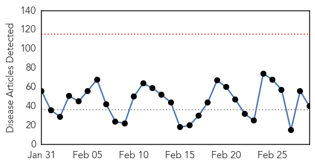

Unknown
30-Day Web Trend
0 alerts, 0 warnings

30-Day Twitter Trend
0 alerts, 0 warnings

Article Locations
Article Confidences

Top Articles:
- 0.917
- Chicago Tribune
- 0.917
- Chicago Tribune
- 0.917
- Chicago Tribune
- 0.917
- Chicago Tribune
- 0.917
- Chicago Tribune
- 0.917
- Chicago Tribune
- 0.917
- Chicago Tribune
- 0.917
- Chicago Tribune
- 0.915
- African Horse Sickness Outbreak: Horses Banned from Moving in and Out of Western Cape
- 0.898
- Tick test for persistent Lyme disease tried in humans
- 0.866
- Ukraine intervention risks dangerous escalation
- 0.866
- NATO ambassadors to discuss Ukraine on Sunday
- 0.866
- Obama national security aides discuss potential policy options for Ukraine
- 0.866
- Suspects shot dead in China station attack
- 0.866
- EU's Ashton urges Russia not to dispatch troops to Ukraine
- 0.866
- U.S., Russian defense chiefs talk as Ukraine's future in balance
- 0.866
- Attack at China station deemed "violent terror attack"
- 0.866
- Russian upper house approves use of troops on Ukrainian soil
- 0.866
- Ukrainian security chiefs to meet as tension mounts in Crimea
- 0.866
- Russia refuses talks with Ukraine
- 0.866
- UK's foreign secretary calls on Russia to de-escalate situation in Crimea
- 0.866
- Russian forces seize military airfield in east Crimea
- 0.866
- Avalanche engulfs Montana home, injuring boy and leaving two people missing
- 0.816
- Mysterious paralyzing illness in California
- 0.772
- Zuma to attend Bona Mugabe wedding
- 0.749
- China rejects Polish pork amid African swine fever scare
- 0.727
- Rat bite fever case bacteria present in most rats
- 0.594
- The deadly virus that could be conquered
- 0.577
- New Waterford woman suspects son has Lyme disease
- 0.548
- US report slams Turkey for endemic corruption
- 0.548
- Crimean prime minister appeals to Russia for help
- 0.548
- Deadly double explosions hit northeastern Nigeria
- 0.548
- Russian intervention would mean war, says Ukrainian PM
- 0.548
- Egypt’s interim president swears in new cabinet
- 0.548
- UN helicopters strike Ugandan rebel group in DR Congo
- 0.548
- Scores dead in mass knife attack at Chinese train station
- 0.548
- Algerian police break up anti-government protest
- 0.542
- Turkey lacks comprehensive research on fluorosis
- 0.517
- The Portland Press Herald / Maine Sunday Telegram
- 0.505
- Yangon General Hospital first to install Varian technology for cancer treatment
Top Tweets:
-
No tweets found for Mar 01, 2014
Bubonic Plague
30-Day Web Trend
0 alerts, 0 warnings

30-Day Twitter Trend
0 alerts, 0 warnings

Article Locations

Article Confidences

Top Articles:
-
No articles found for Mar 01, 2014
Top Tweets:
-
No tweets found for Mar 01, 2014